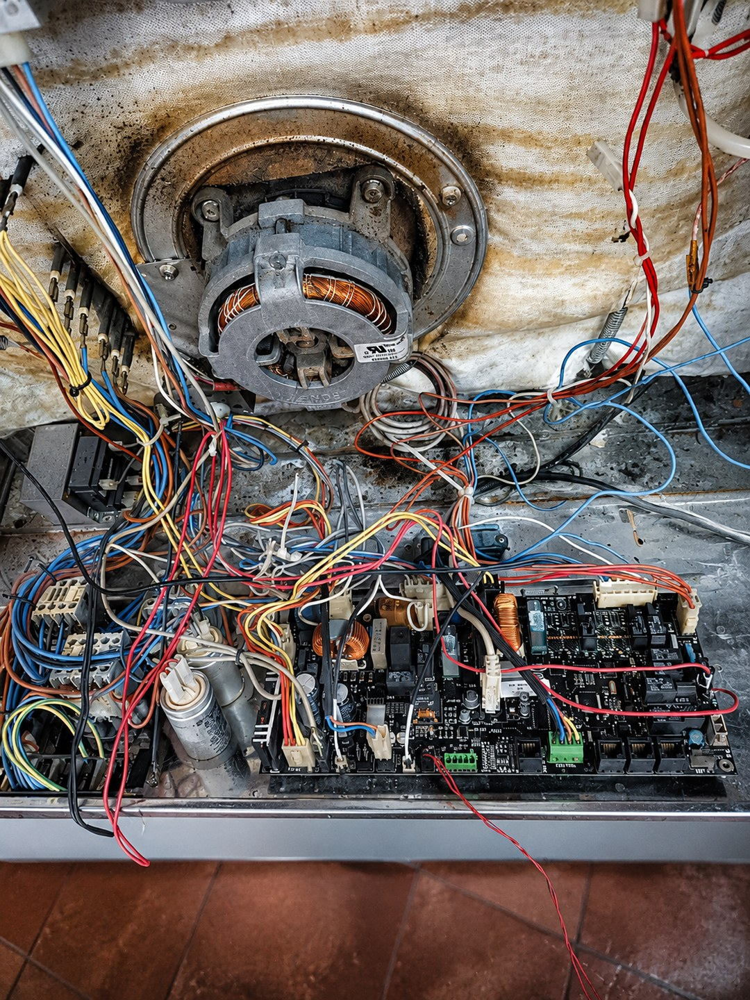

CPU и логика
Не включается интерфейс, аппарат зависает, теряет настройки, не проходит загрузку или выдаёт несвязанные ошибки. Проверяются питание логики, память и межмодульная связь.
Код ошибки не доказывает неисправность платы. Сначала проверяем датчики, питание, вентилятор, клапаны, насосы, контакторы и связь модулей, затем снимаем только подтверждённо подозрительный блок и сохраняем его конфигурацию.

Не одна услуга, а диагностический маршрут
Код ошибки не доказывает неисправность платы. Сначала проверяем датчики, питание, вентилятор, клапаны, насосы, контакторы и связь модулей, затем снимаем только подтверждённо подозрительный блок и сохраняем его конфигурацию.
Не включается интерфейс, аппарат зависает, теряет настройки, не проходит загрузку или выдаёт несвязанные ошибки. Проверяются питание логики, память и межмодульная связь.
Не запускается вентилятор, насос, клапан, контактор или отдельный нагревательный контур. Проверяется не только выход, но и управляемая нагрузка.
Чёрный экран, перезапуски, отсутствие реакции сенсора, потеря связи с основной платой. Причина может быть в кабеле, питании или другом модуле.
Ошибки датчиков, связи и приводов могут формироваться из-за входной цепи платы, разъёма, проводки или самого устройства.
Диагностическая матрица
Каждый симптом раскладывается на цепь платы и связанные внешние узлы. Это снижает риск заменить или ремонтировать исправный модуль.
| Симптом пароконвектомата | Проверяем на плате | Проверяем вне платы |
|---|---|---|
| Не включается | Дежурные напряжения, входная защита, контроллер запуска, связь CPU и дисплея. | Ввод, автомат, клеммы, сетевой фильтр, межблочные кабели. |
| Не работает вентилятор | Силовой ключ, реле/контакторный выход, драйвер, обратная связь частотника. | Двигатель, частотник, тепловая защита, контактор, проводка, механическое заклинивание. |
| Не подаёт воду или пар | Выход клапана/насоса, вход датчика уровня, опторазвязка, разъёмы. | Клапан, насос, давление воды, фильтр, датчик уровня, проводка. |
| Не греет | Выходы контакторов, контроль тока, интерфейс силового модуля, защитные входы. | ТЭНы, контакторы, термостаты, датчики, фазы, газовый контур для газовой модели. |
| Ошибки связи | Трансивер, питание интерфейса, терминаторы, разъёмы, память конфигурации. | Кабель, адресация, другой модуль, влага, программная совместимость. |
| Выбивает автомат | Пробой входной защиты, выпрямителя, силового ключа или дорожки. | Нагреватели, двигатели, клапаны, кабель, контакторы и состояние изоляции. |
Что считается доказательством
На странице перечислены не рекламные обещания, а контрольные точки, которые должны присутствовать в заказе.
Фиксируем модель, серийный номер, артикул платы, аппаратную ревизию, программную версию, съёмную память и положение перемычек.
Фотографируем исходную укладку и подписываем подключения. Ошибка при обратном монтаже может создать новый дефект или опасный режим.
Если сгорел выход вентилятора, клапана или контактора, измеряем сам узел и проводку до подключения отремонтированной платы.
После установки проверяем загрузку, нагрев, пар, вентилятор, воду, слив и защитные блокировки в доступных режимах.
Рабочий процесс
Состав этапов зависит от оборудования, но у каждого должен быть измеримый результат и понятное ограничение.
Записываем код ошибки, этап цикла, условия появления и последние работы на оборудовании.
Измеряем ввод, питающие шины, дисплей, межмодульные кабели и состояние разъёмов.
Сверяем показания и измеряем исполнительные узлы, связанные с ошибкой.
Фотографируем разъёмы, сохраняем память и защищаем модуль при перевозке.
Проверяем питание, входы, выходы, интерфейсы, коррозию и локальный нагрев.
Меняем компоненты или восстанавливаем участок после согласования.
Проверяем доступные функции с имитаторами и связанными модулями.
Повторно проверяем нагрузку, устанавливаем плату и запускаем оборудование.
Границы услуги
Практическая подготовка
Перед снятием модуля важно сохранить контекст аппарата. Для сложных пароконвектоматов одна маркировка платы недостаточна: конфигурация зависит от поколения, исполнения и связанных блоков.
Маршруты внутри кластера
Вопросы до передачи платы
Нет. Один код может быть вызван датчиком, проводкой, приводом, клапаном, питанием, потерей связи или программной конфигурацией.
Да, после предварительного согласования. Нужны фото платы, маркировки, шильдика аппарата, разъёмов и описание симптома. Уровень проверки без оборудования оговаривается заранее.
Минимально — загрузка без ошибок и функция, связанная с ремонтом. При полном цикле дополнительно проверяются внешние нагрузки и доступные режимы нагрева, пара, вентилятора, воды и слива.
Перейдите к функциональному контуру или точной карточке кода. Значение сообщения проверяется по производителю и поколению аппарата.
Заявка без гадания
Фото шильдика, маркировки и обеих сторон платы не заменяют диагностику, но позволяют отсечь неподходящие сценарии и подготовить выезд или приёмку.
Отправить фотографии